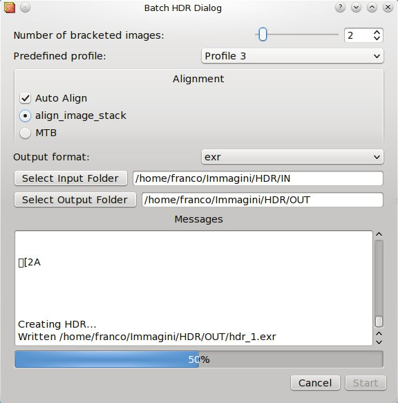

This tool lets you creare HDR images starting from a set of bracketed photos ordered alphabetically.
You have to specify the number of bracketed photos, the HDR creation predefined profile, optionally the auto alignment engine to use for aligning the photos, the output hdr file format, the input directory where the bracketed photos are located, the output directory where the resulting HDRs will be saved to.
You can also always see what's happening in the Messages panel at the bottom.
